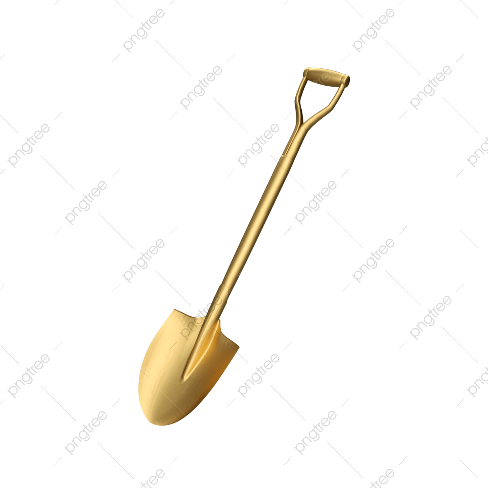

ČASOPIS je vysokoškolský odborný recenzovaný časopis, který slouží pro publikační aktivity akademických pracovníků Vysoké školy i jiných vysokých škol, univerzit a výzkumných organizací.
Od roku 2010 do roku 2018 byl časopis vydáván čtyřikrát ročně v elektronické a tištěné podobě. Od roku 2019 vychází třikrát ročně v elektronické verzi. Redakční rada časopisu sestává z interních i externích odborníků. Funkci šéfredaktora zastává prorektor pro tvůrčí a projektovou činnost Vysoké školy. Funkce odpovědných redaktorů jednotlivých čísel přísluší vedoucím kateder Vysoké školy. Veškeré vydávané příspěvky prochází recenzním řízením a jsou pečlivě redigovány.
Tematické a obsahové zaměření časopisu reflektuje potřeby oborových kateder Vysoké školy. Na základě souhlasu odpovědného redaktora mohou katedry poskytnout publikační prostor i odborníkům bez zaměstnanecké vazby k Vysoké škole.
ISSN XXXX-XXXX
Kontaktní osoba: osoba@casopis.cz
V časopise je možné publikovat odborné články, statě, přehledové studie, recenze a další typy
odborných příspěvků v českém, slovenském a anglickém jazyce. Akceptovány jsou pouze
autorské texty, které nebyly dříve publikovány.
Publikovat lze odborné texty z oblasti ekonomiky, managementu, marketingu, statistiky,
operačního výzkumu, finanční matematiky, pojišťovnictví, cestovního ruchu, regionálního
rozvoje, veřejné správy, sociologie, sportu, psychologie, sociální práce a zdravotnictví
Rozsah jednoho příspěvku by neměl přesáhnout 30 600 znaků. Příspěvky většího rozsahu je
možné přijmout do recenzního řízení po předchozí domluvě.
Bibliografické reference je doporučeno strukturovat dle aktuálních verzí ČSN ISO 690 a ČSN
ISO 690-2 a jejich příloh.
Pokud je to možné, vyhněte se v textu odkazování k poznámkám pod čarou. Doporučeným
citačním stylem je citování pomocí systému „jméno, rok vydání a číslo strany“. Příklad:
(Novák, 2015, str. 100), případně (Novák, 2015a, str. 100).
Do recenzního řízení jsou přijímány příspěvky tematicky odpovídající zaměření časopisu
a formálně upravené dle redakční šablony. Šablona ke stažení
Tato aplikace je výsledkem školního projektu v kurzu Řízení SW projektů na Vysoké škole polytechnické Jihlava.
Nejedná se o stránky skutečného odborného časopisu!.
Soutěž o zlatou lopatku pro tu největší lopatu!

Zkus jestli na to máš! Registace zde: www.Zlata-lopata.com